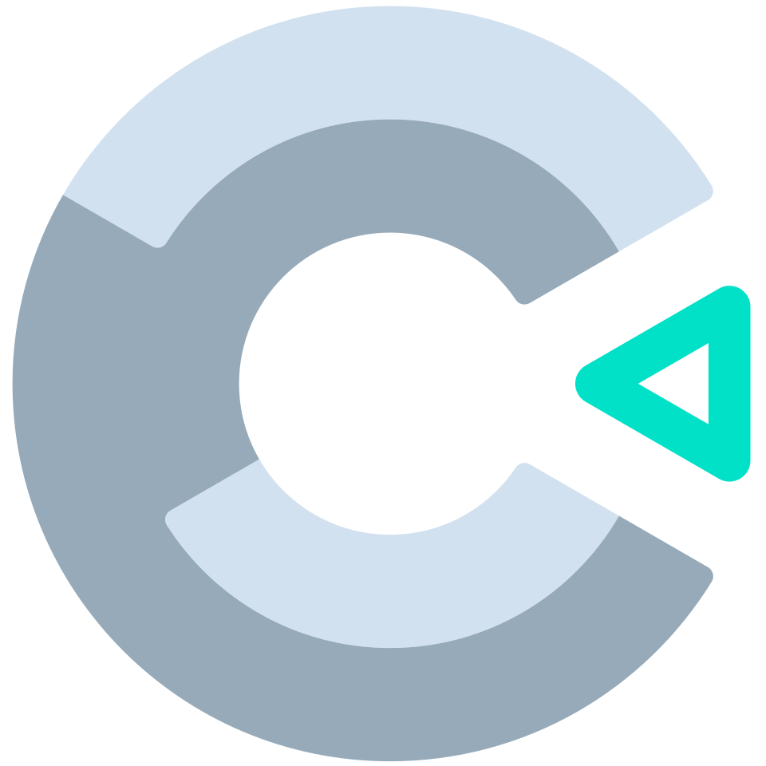
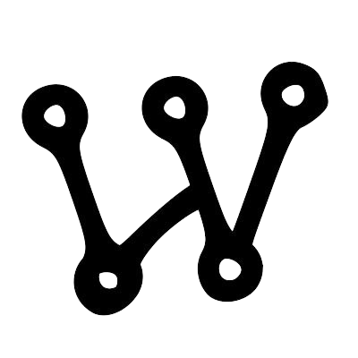

sobre mim
Olá! Meu nome é Marcos Emanoel dos Santos, estudante de ciência da computação na Pontifícia Universidade Católica do Paraná - PUCPR com interesse em desenvolvimento de inteligências artificiais embarcadas e em cibersegurança.
Neste portfólio compartilho projetos e aprendizados das diversas do meu primeiro semestre. Busco evoluir constantemente, explorando novas tecnologias e aplicando boas práticas no desenvolvimento.
projetos
Idle Racer
Ferramentas:
- 
Descrição:
Jogo idle criado em Construct 3 em que o jogador clicava em uma pista de corrida para o carro dar voltas e ganhava dinheiro para isso, o qual utilizava para aprimorar o veículo e trocar de pistas.
Disciplina:
Experiência Criativa: Navegando na Computação
Calculadora Sustentável
Ferramentas:
Descrição:
Software produzindo em Processing que calcula a emissão de carbono de cada usuário e fornece informações sobre como ele pode contribuir mais efetivamente para um desenvolvimento suspentável do planeta.
Disciplina:
Experiência Criativa: Navegando na Computação
Estudante Solidário
Ferramentas:
Descrição:
Site criado com o intuito de promover a solidariedade, onde cidadãos podem mostrar problemas que enfrentam e estudantes de universidades podem fazer o que estiver ao seu alcance para ajudar.
Disciplina:
Experiência Criativa: Navegando na Computação
Semáforo Inteligente
Ferramentas:
- 
Descrição:
Semáforo inteligente desenvolvido no simulador Wokwi e conectado a um broker de MQTT Mosquitto num docker que permite o controle de um semáforo através de smartphones.
Disciplina:
Fundamentos de Sistemas Ciberfísicos
Oráculo das cartas
Ferramentas:
Descrição:
Jogo no qual o jogador escolhe duas opções entre quatro cartas disponíveis por uma vidente que preverão seu futuro, o qual varia entre fins cômicos e trágicos dependendo das opções.
Disciplina:
Raciocínio Algorítmico
Calculadora de notas
Ferramentas:
Descrição:
Software desenvolvido em Python que permite ao usuário inserir notas de estudantes e, quando finalizar, exibe no terminal informações estatísticas úteis, como média, maior nota e percentagem de aprovados.
Disciplina:
Raciocínio Algorítmico
Análise Computacional de Risco de Burnout
Ferramentas:
Descrição:
Software desenvolvido em Python que permite ao usuário obter informações úteis sobre a terrível doença que acomete a sociedade moderna: o burnout. Além disso, pode obter informações de pessoas fictícias baseadas em estatísticas reais da doença.
Disciplina:
Raciocínio Algorítmico
Minazuki Case
Ferramentas:
Descrição:
Visual novel desenvolvida na qual o jogador deve solucionar um caso criminal de um assassinato envolvendo superpoderes de natureza sobrenatural por meio de regras lógicas.
Disciplina:
Resolução de Problemas com Lógica Matemática
competências desenvolvidas
Experiência Criativa: Navegando na Computação
A disciplina de Experiência Criativa utiliza do desenvolvimento de aplicativos simples para promover práticas colaborativas e aplicação de temas como inovação e empreendedorismo.
- Aprimoramento das habilidades de trabalho em equipe no contexto da Ciência da Computação, com foco em práticas colaborativas.
- Capacidade de aprender e utilizar novas ferramentas e ambientes de desenvolvimento de software de forma autônoma.
- Resolução de problemas no desenvolvimento de software, considerando o contexto do problema e os recursos disponíveis.
- Participação em projetos extensionistas para o desenvolvimento de soluções reais voltadas à comunidade
Filosofia
A disciplina de Filosofia promove a reflexão crítica sobre a condição humana nas dimensões pessoal, acadêmica e profissional, incentivando a transformação de opiniões em argumentos fundamentados.
- Desenvolvimento do senso crítico e da capacidade de transformar opiniões em argumentos fundamentados.
- Reflexão filosófica sobre a condição humana nas dimensões pessoal, acadêmica e profissional.
- Aprimoramento da habilidade de analisar e debater questões contemporâneas de forma crítica e propositiva.
Fundamentos de Sistemas Ciberfísicos
A disciplina Fundamentos de Sistemas Ciber-Físicos aborda os princípios de hardware, software, comunicação de dados e serviços em nuvem aplicados a sistemas ciber-físicos e Internet das Coisas (IoT).
- Estudo das arquiteturas de computadores e dos principais componentes de hardware, como CPU, memória e dispositivos de entrada e saída.
- Compreensão do funcionamento de sistemas operacionais, incluindo gerenciamento de memória, processos e sistemas de arquivos.
- Aprendizado sobre redes de computadores, protocolos de comunicação (TCP, UDP, HTTP, MQTT) e endereçamento IP.
- Implementação de soluções para problemas estruturados integrando hardware, software, comunicação e serviços em nuvem.
Raciocínio Algorítmico
A disciplina Raciocínio Algorítmico desenvolve o pensamento computacional por meio da criação de algoritmos e implementação de programas simples, abordando a base da programação e boas práticas.
- Desenvolvimento do pensamento computacional e análise de problemas para criação de soluções algorítmicas.
- Manipulação de estruturas de dados homogêneos, como vetores e matrizes.
- Utilização de funções, modularização e introdução à recursividade na construção de programas.
- Participação em projetos colaborativos, aplicando conceitos aprendidos na solução de problemas computacionais.
Resolução de Problemas com Lógica Matemática
A disciplina Resolução de Problemas com Lógica Matemática desenvolve a capacidade de modelar problemas estruturados do mundo real utilizando lógica matemática computacional.
- Desenvolvimento do pensamento computacional e análise de problemas para criação de soluções algorítmicas.
- Manipulação de estruturas de dados homogêneos, como vetores e matrizes.
- Utilização de funções, modularização e introdução à recursividade na construção de programas.
- Participação em projetos colaborativos, aplicando conceitos aprendidos na solução de problemas computacionais.